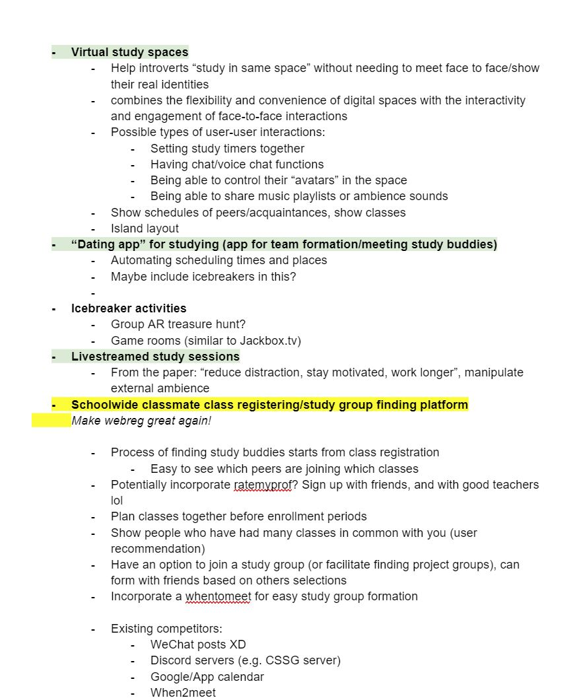
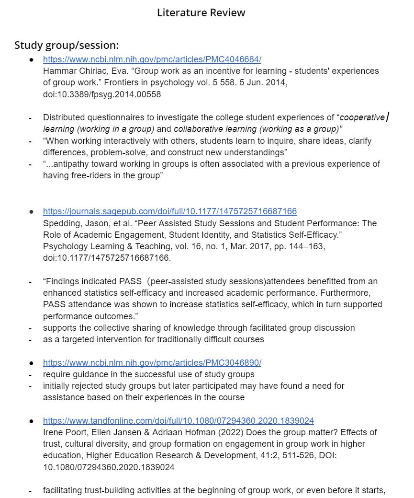

Enrolled Social Computing Space
UX Design —
Figma
Prototyping
Usability Testing
User Research
COGS 123 Spring '22
Background
Cogs 123 examines a range of organizational, technical, and business challenges related to social computing, and teaches the tools to analyze, design, and build online communities. For our project, we prototyped and usability tested a novel social computing environment within UCSD's class registration.
In this project, my team and I:
- Idenfitied a social setting our project would focus on
- Conducted research through interviews, surveys, and a literature review to understand user needs
- Came up with several potential social computing experiences that we pitched to the class
- Checked competing ideas to see what we were up against and what we could incorporate
- Created a working prototype and a prototyping plan for usability testing
- Conducted two rounds of usability testing and reworked prototype and its features
- Used figma to prototype a High-Fi version of what our social computing space would look like
- Final pitch, recommendation, and evaluation

Research and Ideation
We started by picking a social setting for our tool. We decided to pick studying and study group formation as our social setting
Problem Statement: How can we facilitate or create social interactions within academic settings to encourage collaborative learning?
Our first task was to do background research and come up with ideas for our project within our topic. First, we had to understand How students actually study, to identify areas for improvement.
Our Background research consisted of:
Stakeholder Interviews
To get more information about our target user, we interviewed 5 students. 4 of our interviewees were juniors, and one was a senior. We learned:
- Students value equal engagement, contribution, and skill level in a study group
- Most study groups were a mix of friends vs. strangers, though some others stuck to only to known acquaintances
- Students formed study groups to eeeting for group projects, Completing homework assignments, Study or prepare for exams,or to tackle difficult class content.
Online survey
Then, we built out a survey which we sent to 87 people and got 27 replies.
Online literature search
Then, we did some online research to learn more about student study preferences. Check out the full doc Here.
We then sifted through all our data and started to ideate. We generated 3 ideas which we pitched to the class.
- "Dating App" for study groups
- Live study session
-
Facilitating class registration and study group formation
Out of our available ideas, we decided to pick the third. As the one who came up with the idea, I felt strongly that it offered the most potential and that the experience we could create would be the most unique. Some members of the team were concerned that it would be too ambitious to prototype, but I asserted that that this was our chance to take a risk and do something bold. After a long meeting, we took a vote and agreed on the third idea. Instead of going for the easier solution, (My view was that live study session is basically just a zoom call and a dating app for study groups isn't really all that unique...) we went for something we felt was truly unique, that we would use ourselves, and that we felt would work in the real world.
The Challenge
- Registering for classes with friends is a hard logistical challenge: students have found various ways of sharing school schedules
- Registering for classes is drab, students are reduced to numbers: no info about enrollees, others you might know in class, and there are no opportunities for students to engage
- Students like to find and create study groups, and this process is hard: coordinating schedules, meeting people, finding a means of communication…this process should be facilitated right from class registration
- Webreg (UCSD's registration tool), could be a lot more!
The Opportunity
A tool that brings a social element to class registration and that facilitates study group formation
- Shows students which friends are enrolled, planned, and waitlisted in various courses and gives suggestions
- Gives information about the class–could incorporate 3rd party tools like ratemyprof
- Facilitates the process of finding study groups by connecting students based on study modality, schedule availability, and other factors
- More unique than live study experiences by creating a social computing environment from the get go
Competing Ideas
Nothing like we imagine exists currently, so we explored at ways students were solving this problem on their own. We evaluated some of the features and how they might be useful to incorporate in our tool and prototype.
- Google/App Calendar
- When2Meet
- Discord servers/Slack
Building and Testing Prototypes
Our idea was quite ambitious and we needed to find a way to prototype it. From the getgo, it was clear we were going to use piggyback prototyping, where we leverage an existing solution and tweak it for our needs. There was much debate within our group about what to piggyback off of. We stated by listing out our needs:
- Something that lets many people interact at the same time
- Something with data storage, so we could have a course catalog and lists of 'enrolees' that update live on each person's dashboard
- Something that let us create personalized pages to simulate the personalised experience of our tool
We then settled for google sheets, which had the feature set we needed, then we developed a testing plan for both of our prototyping sessions:
Testing Plan
- Pre-Survey (1 Week Before Session)
- We used this survey to collect information about our users so that we could make individual profiles for them to test out in both iterations of our prototype.
- Prototyping Session (25 mins)
- Intro and explanation of our idea [5 mins]
- Familiarizing yourself with the interface [5 mins]
- Exploring Course List
- Exploring recommendations
- Adding friends
- Time to enroll! [5 mins]
- Enroll in 3 classes total
- If a class is full, either waitlist or select another class
- Reflection and comments [10 mins]
- Post survey
- The post-survey was used to collect insights from our users so that we could refine our prototype and track improvement
Prototype 1
Our plan was to create several google sheets what are personalized for each user based on our survey responses. We used the survey to craft personalised recommendations for our participants to see, since we felt it was an important part of showcasing the interactivity in our social computing space. In our first iteration, each person has their own sheet containing three main tabs.
Dashboard contains the recommended classes and friends based on the user’s academic background and social information.
Profile page displays the user’s general information, study goals, academic history, and friends. Clicking the “Messages” button on the top will guide you to the slack channel.
User can either plan, enroll, or waitlist a class by selecting different options in the drop-down menu.
We role-played as real-time notification bots in the Slack channel to notify people when they became friends.
Protototyping Session 1 Insights
We learned:
- The live chat features weren’t useful: None of our users interacted with each other using the slack messaging feature.
- Our prototype had too many tabs: this proved complicated for users and made it harder to see what their friends were enrolling in.
- Our prototype was too broad: Some users were confused about what they should be doing, where the social interactions were, and spent most of their time trying to discover the prototype’s features.
Our first prototype and prototyping session went very well. We proved that google sheets would work as the tool to piggyback off of and we got good insight about how to change it's structure the next interation of our prototype.
Prototype 2
Our second prototype fixed the issues uncovered in our first user test.
We condensed everything into one sheet, with each user having their own tabs and a master tab to keep track of the status of each person for each class.
Each user has a tab that displays their profile picture, major, minor, year, and college on the top. Below is the Course List section where users can plan/enroll/waitlist their classes. For each class, there is a column displaying who is planned and another displaying who is enrolled. We also used conditional formatting to bold the names of the user’s friends so that it is easy to see what classes their friends are planning/taking. Additionally, the “View Class” button can take users to the class homepage.


Protototyping Session 2 Insights
We learned:
- The ‘all-in-one’ sheet was more straightforward: Testers reported spending less time bouncing from sheet to sheet, and knew exactly where the interactivity was
- Testers loved real-time updates: Testers loved the google sheets wizardry, including the drop-down, the live updates of who was enrolled, as well as indications of which enrollees were on your friends list
- Shaky waitlist implementation: Some users did not quite understand how the waitlist worked system worked in regards to COGS 188, which became ‘full’ during our prototype session
Portfolio and Presentation:
We built out our concept as a Figma design. Below are examples of the home page, my courses page, course catalog, and detailed course page.
We showcased some of the live messaging functionlities and what the interactions could look like. Our messaging window can be accessed on any page, which allows users to discuss the relevant information presented alongside the chat window and ask questions at any time. Message also supports easy sharing of schedules and course information. Now you are able to more efficiently share information and collaboratively plan your courses!


Considerations
- Putting a face to a number means a lot: In a social setting where users are reduced to numbers, and where there are no opportunities for social interaction, simply putting a face to the name can do a lot.
- Don’t force social interaction. Some students aren’t looking to make friends. A tool in this social setting should allow others to ‘be in the know’ without forcing any interactions.
- Privacy issues: Some students want to keep their courses private, or want to have a way to filter who can. We should provide ways to help users maintain control over their privacy.
- Nobody wants an extra social network to manage: having an additional friends list to manage can be a chore, so it may be better to import friend information from 3rd party sources
What I learned
This project taught be a lot about about being ambitious and about creating a UX project from start to finish. It was super cool to research, ideate, create a prototype, and actually test it, then create a figma UI to show off what the final product would look like. I learned about different prototyping methods, and about working with a team of talented students with a keen eye for design. This was one of my favorite school projects ever, and I'm proud of how it turned out!
Instructor Feedback
Excellent! One of the best spreadsheet prototypes I have seen in this class because it did a great job of showing how this could actually work, and it seems like it has real value. In the final push, consider how friends might communicate throughout the stages of planning, registration, and course prep.
Link to Project